Course Overview
Course Details
- Course: CS G526 — Advanced Algorithms & Complexity
- Instructor: Tulasimohan Molli
- TA: Hans Krupakar
- Schedule: Mon 2–3 PM, Tue 12–1 PM, Thu 12–1 PM, @ I114
- Lab: Thu 9–11 AM @ I015
- Office Hours: Tue 2–3 PM @ H-134
- Course page: tulasimohan.github.io/teaching/2026_aac/
- Piazza: LMS or Google Classroom
Advanced Algorithms & Complexity
- Advanced Algorithms: Designing efficient solutions by relaxing strict guarantees.
- Controlled error (randomization),
- settling for near-optimal quality (approximation),
- adapting to unknown future data (online),
- exploiting parallelism and distribution (parallel & distributed).
- Complexity Theory: Mathematically classifying problems by the resources they demand.
- Identifying the absolute boundary between what is tractable and what is hard.
- The Duality: Understanding what makes problems hard (complexity) to guide how we solve them (advanced paradigms).
Textbooks
- T1 Motwani & Raghavan, Randomized Algorithms, Cambridge University Press, 1995.
- T2 Papadimitriou & Steiglitz, Combinatorial Optimization: Algorithms and Complexity, PHI, 1982.
- T3 Arora & Barak, Computational Complexity: A Modern Approach, Cambridge University Press.
Reference Books
- R1 Williamson & Shmoys, The Design of Approximation Algorithms, CUP.
- R2 Hromkovič, Design and Analysis of Randomized Algorithms, Springer.
- R3 Vazirani, Approximation Algorithms, Springer.
- R4 Ausiello et al., Complexity and Approximation, Springer.
- R5 Kleinberg & Tardos, Algorithm Design, Pearson.
- R6 Assigned reading (papers, notes).
Textbook Covers
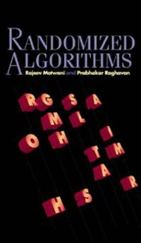
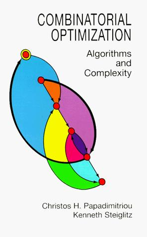
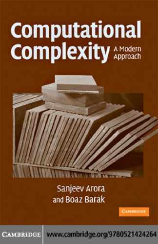
Reference Covers
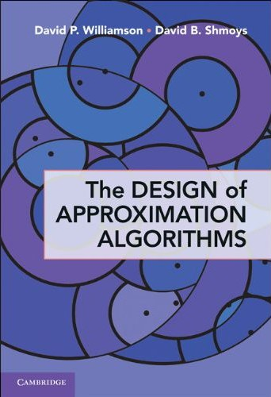
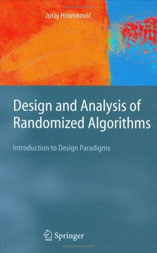
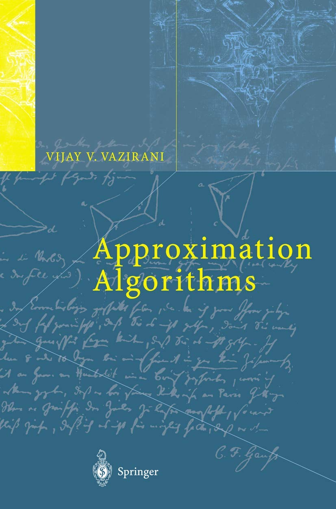
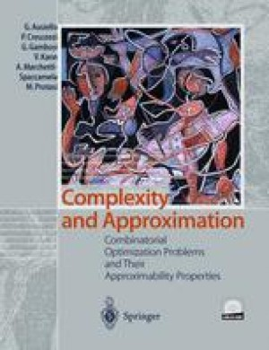
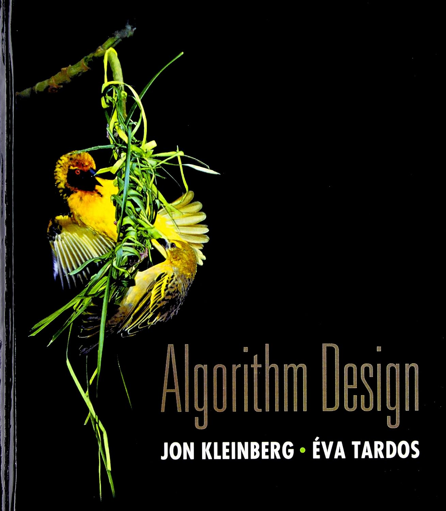
Evaluation Scheme
| Component | Weight | Duration | Date & Time | Style |
|---|---|---|---|---|
| Class Participation | 10% | Continuous | Throughout | Open Book |
| Lab Participation | 10% | Weekly | Thu 9–11 AM | Open Book |
| Term Project | 20% | Semester | Throughout | Open Book (Proposal + Presentation + Report) |
| Mid-Semester Exam | 25% | 90 mins | 06/10 | Closed Book |
| Comprehensive Exam | 35% | 180 mins | 04/12 AN | Closed Book |
NC Criterion: 30% of average of top 3 performers or 40% of median, whichever is lower.
How this course is useful
- Coping with Intractability: Standard DSA fails on NP-complete problems. Advanced paradigms allow us to bypass these mathematical limits.
- Handling Uncertainty: Real-world inputs are dynamic and incomplete. Advanced models (online/games) make robust decisions under uncertainty.
- Sophisticated Tooling: Equips you with powerful techniques (probabilistic method, LP rounding, game theory) valued in research and advanced software systems.
- Cryptography and Complexity Theory: Modern cryptography, cloud databases, and machine learning scaling depend fundamentally on complexity assumptions and randomized tools.
What this course is NOT
- NOT a DSA course: We assume you are already familiar with asymptotic notation, solving recurrences, data structures like linked lists, arrays, search trees, and heaps, and algorithmic paradigms like greedy, divide and conquer, and dynamic programming.
- NOT an implementation-first course: We prioritize analysis and proofs over writing standard code. (We also have a lab.)
- NOT a broad survey: We focus on going deep on a select few powerful paradigms rather than a shallow tour of many.
- NOT a probability course: Randomization is the backbone here; probability is a necessity.
Estimating the Area of a Shape
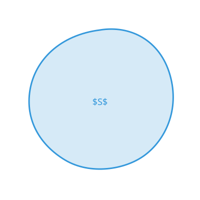
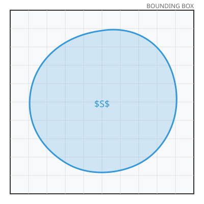
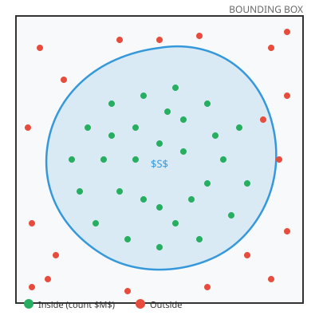
How do you compute the area of this shape?
Grid method: Superimpose a fine grid. Count cells inside. Resolution-dependent and tedious.
A faster way — random sampling: 1. Enclose the shape in a bounding box. 2. Throw N darts uniformly at random. 3. Count M that land inside.
\text{Area}(S) \approx \text{Area}(\text{box}) \times \frac{M}{N}
Estimating \pi by Dart-Throwing
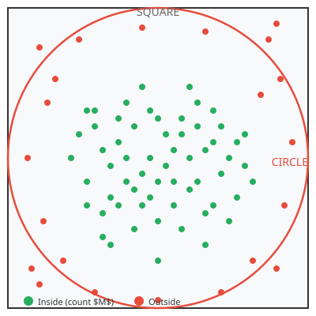
Circle of radius r inscribed in a square of side 2r:
\frac{\text{Area of circle}}{\text{Area of square}} = \frac{\pi r^2}{4r^2} = \frac{\pi}{4}
Throw N darts uniformly, M land inside:
\pi \approx 4 \cdot \frac{M}{N}
What Do We Mean by “Random”?
- Not “arbitrary”: Random means values drawn from a probability distribution (e.g., uniform distribution where every outcome is equally likely).
- Physical Randomness: Quantum mechanics suggests nature has irreducible randomness (e.g., radioactive decay, thermal noise).
- Practical Randomness: Computers use deterministic Pseudo-Random Number Generators (PRNGs) seeded with entropy to produce sequences that look random.
- Why it matters: Probability is a way of modelling uncertainity, which is inherent in many real world problems.
Why the Error Doesn’t Cost Us
- Background Failures: An algorithm error probability of 10^{-6} is smaller than background computer failure rates (e.g., cosmic-ray memory flips \approx 10^{-12} per cell).
- What We Gain: Extreme speed, structural simplicity, and robustness in high dimensions compared to exponential grid costs.
- The Honest Model: Randomness isn’t a hack—it is often a more realistic model of physical computation.
Roadmap: 42 Lectures, 14 Weeks
- Weeks 1–3 (M1–M2): Probability & randomized algorithms, tail inequalities.
- Weeks 4–5 (M3): Expected-time data structures; randomized graph algorithms.
- Weeks 6–7 (M4–M5): Game theory; online algorithms.
- Weeks 8–9 (M6–M7): Number theory; parallel & distributed algorithms.
- Week 10 (M8): NP-completeness & reductions; the polynomial hierarchy.
- Weeks 11–12 (M9): Approximation algorithms, schemes, inapproximability.
- Week 13 (M10): Interactive & ZK proofs, #P counting, algebraic methods.
- Week 14 (M11): Student project proposal presentations.
Next Lecture
Probability Review I: Random Variables & Expectation
- Why probability in algorithms: randomized inputs and randomized algorithms; the tools we need all term.
- Sample space, events, axioms: \Pr as a function, the three axioms, examples (coin toss, die roll).
- Random variables & expectation: X: \Omega \to \mathbb{R}, discrete vs continuous, E[X] = \sum_x x \cdot \Pr(X = x).
- Linearity of expectation: E[X + Y] = E[X] + E[Y] — no independence required.
- Worked examples: expected number of heads in n flips; fixed points of a random permutation.
- Teaser: the coupon collector (n H_n draws) — revisited with concentration bounds in Week 3.
Why this matters: expectation and linearity are the engine behind every expected-runtime analysis in Weeks 1–3.